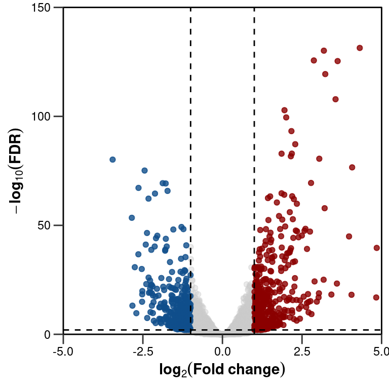

Chapter 2 ggplot2
2.1 Packages needed for these examples
- ggplot2 for the main plotting functions
- forcats for easy factor releveling
- ggrepel for better in-plot labeling
- ggpubr for easy signifigance bars and testing
2.2 Boxplots
2.2.1 Boxplot examples with iris data
Setup the data in long format which is better suited for ggplot2.
long_iris <- reshape(data = iris, direction = "long",
timevar = "Dimension",
times = colnames(iris)[1:4],
idvar = "flower_ID",
ids = paste0("f", 1:150),
v.names = "Length",
varying = 1:4,
new.row.names = 1:600)forcats::fct_reorder() used here to reorder factor levels for both Species (ascending left to right) and Sepal/Petal lengths.
ggplot(long_iris, mapping = aes(x=forcats::fct_reorder(Species, Length), # reorder by measurements
y=Length,
colour=forcats::fct_reorder(Dimension, Length))) + # reorder by measurements
# Define fill as a alpha shade of colour aesthetic
geom_boxplot(mapping = aes(fill = after_scale(alpha(colour, 0.4)))) +
# Set colours manually
scale_color_manual(name="Dimension", values = c("dodgerblue", "red1", "dodgerblue4", "red4")) +
# Set y-axis to end on tick, you could use c(0,0) but expansion offers more customization i.e. non-symmetrical expansion of axis
scale_y_continuous(name = "Measurement (mm)", expand = expansion(mult = 0), limits = c(0,9), breaks = seq(0,9,3)) +
theme_classic(13) +
# Modify theme
theme(title = element_text(face="bold"),
legend.title = element_blank(),
axis.text = element_text(colour="black"),
axis.title.x = element_blank(),
axis.ticks.length = unit(0.5, "lines"),
panel.grid.major.y = element_line(colour = ggplot2::alpha("black", 0.4), linetype = "dashed"),
legend.position = "inside",
legend.position.inside = c(0.12, 0.85),
)Sometimes we want to facet which enables a bit nicer X-axis options e.g. separating axis for different species. This also enables possibility to use ggpubr::stat_compare_means for testing.
# Comparisons to use for testing
my_comparisons <- list( c("Petal.Width", "Sepal.Width"), c("Petal.Length", "Sepal.Length"))
# For testing we need to set the groups in the comparison on X-axis
ggplot(long_iris, mapping = aes(x=forcats::fct_reorder(Dimension, Length),
y=Length,
colour=forcats::fct_reorder(Dimension, Length))) +
geom_boxplot(mapping = aes(fill = after_scale(alpha(colour, 0.4)))) +
# P-value labeling using asterix
ggpubr::stat_compare_means(mapping = aes(label = after_stat(p.signif)),
comparisons = my_comparisons, label.y = c(8,8)) +
scale_color_manual(name="Dimension", values = c("dodgerblue", "red1", "dodgerblue4", "red4")) +
scale_y_continuous(name = "Measurement (mm)", expand = expansion(mult = 0), limits = c(0,9), breaks = seq(0,9,3)) +
# faceting and reordering the facets
facet_wrap(~forcats::fct_reorder(Species, Length), strip.position="bottom") +
theme_classic(13) +
theme(title = element_text(face="bold"),
axis.text = element_text(colour="black"),
axis.title.x = element_blank(),
axis.ticks.length = unit(0.5, "lines"),
axis.ticks.x = element_blank(),
strip.background = element_blank(),
strip.placement = "outside",
axis.text.x = element_blank(),
panel.grid.major.y = element_line(colour = ggplot2::alpha("black", 0.4), linetype = "dashed")
)2.3 Volcano plots
2.3.1 Volcano plot from the airway dataset
Some example volcano plots using airway dataset. First we have to perform de_analysis as the data is unprocessed.
library(airway)
library(DESeq2)
data("airway")
# Perform DEA
dds <- DESeqDataSet(airway, design = ~ cell + dex)
dds <- DESeq(dds, betaPrior=FALSE)
res <- results(dds, contrast = c('dex','trt','untrt'))
res <- lfcShrink(dds, contrast = c('dex','trt','untrt'), res=res, type = 'normal')
# Make data.frame for plotting
res_df <- as.data.frame(res)
res_df$ensid <- rownames(res_df)
res_df$gene_name <- airway@rowRanges@elementMetadata@listData$gene_name[match(airway@rowRanges@elementMetadata@listData$gene_id, res_df$ensid)]
# DO NOT DO THIS WITH REAL DATA WITHOUT KNOWING WHAT YOU ARE ACTUALLY REMOVING HERE
res_df <- na.omit(res_df)Simple volcano with labeling using ggrepel::geom_text_repel().
ggplot(na.omit(res_df), mapping = aes(x=log2FoldChange,
y=-log10(padj),
colour=factor(ifelse(padj<0.01 & abs(log2FoldChange)>1, "Sig.", "NS"),
levels = c("Sig.", "NS")))) +
geom_point(alpha=0.8) +
scale_color_manual(values = c(scales::muted("red"), ggplot2::alpha("grey80", 0.8))) +
ggrepel::geom_text_repel(mapping = aes(label = ifelse(padj<1e-50 & abs(log2FoldChange)>2.5, gene_name, "")),
box.padding = 1, seed=1234, size=2, max.overlaps = Inf, min.segment.length = 0) +
theme_bw() +
# add cutoffs
geom_vline(xintercept = c(-1,1), linetype = "dashed") +
geom_hline(yintercept = -log10(0.01), linetype = "dashed") +
# Using bquote for subscripts
scale_y_continuous(name = bquote(bold(-log[10](FDR))),
expand = expansion(mult = 0),
limits = c(0,150),
breaks = seq(0,150,50)) +
scale_x_continuous(name = bquote(bold(log[2](Fold~change))),
expand = expansion(mult = 0),
limits = c(-5,5),
breaks = seq(-5,5,2.5)) +
# prevent clipping of the panel borders
coord_cartesian(clip = "off") +
theme(axis.title = element_text(face="bold"),
axis.text = element_text(colour="black"),
axis.ticks.length = unit(0.5, "lines"),
axis.line = element_blank(),
panel.border = element_rect(colour = "black"),
legend.title = element_blank(),
panel.grid = element_blank(),
legend.position = "inside",
legend.position.inside = c(0.1,0.9),
legend.background = element_blank())For a bit more customizable plots we can separate significant and non-significant DEGs
# create dataframe for significant DEGs
res_df_sig <- res_df[res_df$padj<0.01 & abs(res_df$log2FoldChange)>1,]
# Create dataframe for non significant
res_df_nsig <- res_df[!(res_df$gene_name %in% res_df_sig$gene_name),]More classic version with up and down regulated genes with different colours.
ggplot() +
geom_point(data = res_df_nsig, mapping= aes(x=log2FoldChange,
y=-log10(padj)),
colour="grey80", alpha=0.4) +
geom_point(data = res_df_sig, mapping= aes(x=log2FoldChange,
y=-log10(padj),
colour=factor(ifelse(log2FoldChange>0, "Up", "Down"), levels = c("Up", "Down"))),
alpha=0.8) +
scale_colour_manual(values = c("darkred", "dodgerblue4")) +
theme_bw() +
geom_vline(xintercept = c(-1,1), linetype = "dashed") +
geom_hline(yintercept = -log10(0.01), linetype = "dashed") +
scale_y_continuous(name = bquote(bold(-log[10](FDR))),
expand = expansion(mult = 0),
limits = c(0,150),
breaks = seq(0,150,50)) +
scale_x_continuous(name = bquote(bold(log[2](Fold~change))),
expand = expansion(mult = 0),
limits = c(-5,5),
breaks = seq(-5,5,2.5)) +
# prevent clipping of the panel borders
coord_cartesian(clip = "off") +
theme(axis.title = element_text(face="bold"),
axis.text = element_text(colour="black"),
axis.ticks.length = unit(0.5, "lines"),
axis.line = element_blank(),
panel.border = element_rect(colour = "black"),
legend.title = element_blank(),
panel.grid = element_blank(),
legend.position = "none")
Some times it can be interesting to see how the DEGs are separated into up- and down-regulated ones. We can calculate densities in 2d space using MASS and map the values to points in the graph.
#For calculating density
get_density <- function(x, y, ...) {
dens <- MASS::kde2d(x, y, ...)
ix <- findInterval(x, dens$x)
iy <- findInterval(y, dens$y)
ii <- cbind(ix, iy)
return(dens$z[ii])
}
# calculate densities for points
res_df_sig$density <- get_density(-log10(res_df_sig$padj), res_df_sig$log2FoldChange)
# plot separately
ggplot() +
geom_point(data = res_df_nsig, mapping= aes(x=log2FoldChange, y=-log10(padj)), colour="grey80", alpha=0.4) +
geom_point(data = res_df_sig, mapping= aes(x=log2FoldChange, y=-log10(padj), colour=density), alpha=0.8) +
scale_color_viridis_c() +
theme_bw() +
geom_vline(xintercept = c(-1,1), linetype = "dashed") +
geom_hline(yintercept = -log10(0.01), linetype = "dashed") +
scale_y_continuous(name = bquote(bold(-log[10](FDR))),
expand = expansion(mult = 0),
limits = c(0,150),
breaks = seq(0,150,50)) +
scale_x_continuous(name = bquote(bold(log[2](Fold~change))),
expand = expansion(mult = 0),
limits = c(-5,5),
breaks = seq(-5,5,2.5)) +
# prevent clipping of the panel borders
coord_cartesian(clip = "off") +
theme(axis.title = element_text(face="bold"),
axis.text = element_text(colour="black"),
axis.ticks.length = unit(0.5, "lines"),
axis.line = element_blank(),
panel.border = element_rect(colour = "black"),
legend.title = element_blank(),
panel.grid = element_blank(),
legend.position = "none")